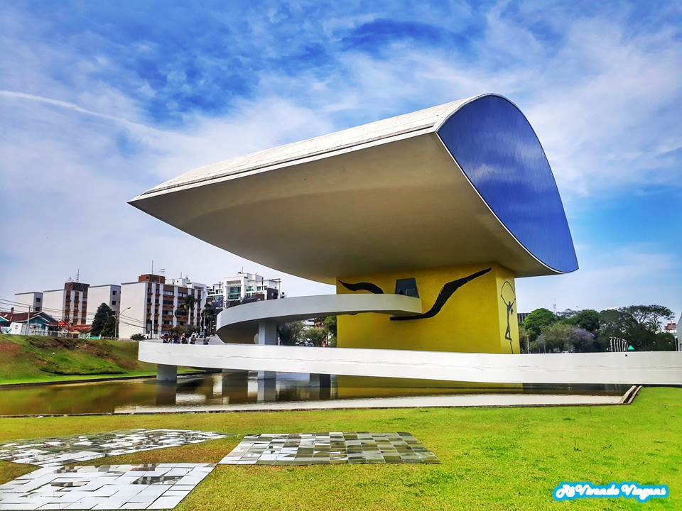
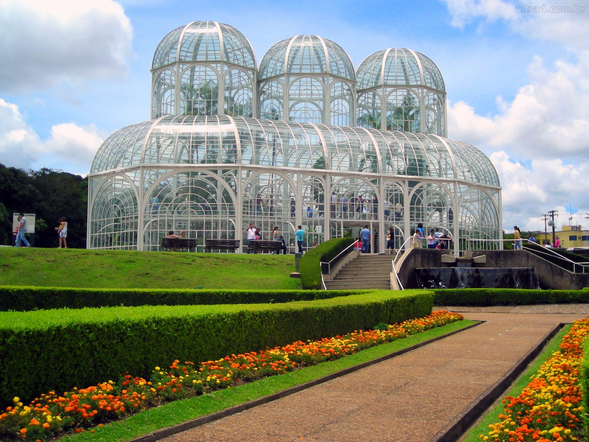

O Museu do Olho é o apelido carinhoso do Museu Oscar Niemeyer (MON), localizado em Curitiba, devido ao formato
icônico do seu anexo principal que lembra um olho humano. É o maior museu de arte da América Latina, com foco em
artes visuais, arquitetura e design. Ele fica na Rua Marechal Hermes, número 999, no bairro Centro Cívico. O horário de
funcionamento é de terça a domingo, das 10h às 18h, com a venda de ingressos e o acesso às salas de exposição permiti-
-dos até as 17h30. Para visitar, é preciso pagar entrada, que atualmente custa 36 reais a inteira e 18 reais a meia-entrada.
No entanto, o museu oferece entrada gratuita para todo o público todas as quartas-feiras e também no último domingo de
cada mês. Além disso, menores de 12 anos e maiores de 60 anos não pagam em nenhum dia, desde que apresentem docu-
-mento comprobatório.

